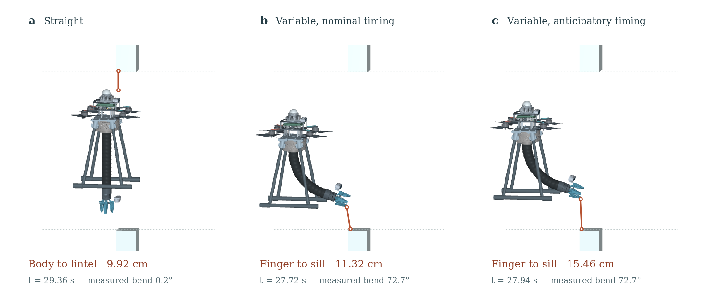
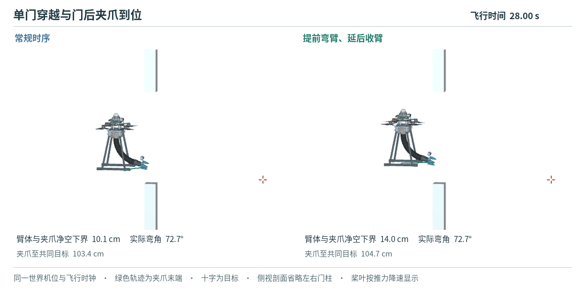
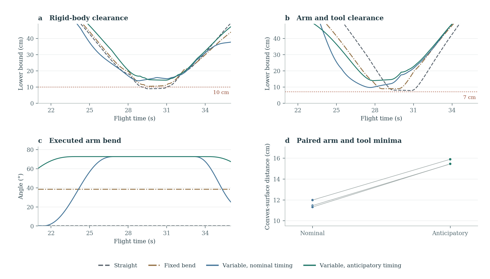

G1 · 已知单门闭环 / 2026-11-19 14:05（北京时间）
同一扇门与同一目标，机身和臂各留出多少空间？
12 趟窄门均无接触并到达门后目标。固定 40° 已能通过。配对调时后，臂与爪的最小凸体净空增加 3.91–4.14 cm。
大附件单独提供：241118 · 固定弯臂原始包、241118 · 直臂原始包、241118 · 可变形常规时序原始包、241118 · 可变形提前调时原始包、241119 · 固定弯臂原始包、241119 · 直臂原始包、241119 · 可变形常规时序原始包、241119 · 可变形提前调时原始包、241119 · 宽门链路检查原始包、241120 · 固定弯臂原始包、241120 · 直臂原始包、241120 · 可变形常规时序原始包、241120 · 可变形提前调时原始包。
模型与场景

01直臂贴近门楣，夹爪最接近门槛
预先选定的噪声种子 241119。红线连接完整三维凸体几何的最近点，各画面取各自最近时刻。


02在同一时刻观察两种时序
飞行第 28 秒。相机固定在同一世界坐标，左右两图使用相同尺度。绿色为夹爪轨迹，十字为门后的目标。

曲线与机制图

01净空、执行弯角与三组配对结果
前三幅显示种子 241119 的保守净空曲线和实际弯角。最后一幅连接各配对种子的精细凸体距离。

视频回放
01同步观看过门及门后夹爪到位
1 倍速，从离地后第 14 秒到第 46 秒。中剖面省略侧柱，物理碰撞模型包含全部四面门框。
论文与报告
第一页给出最近点和四种方案的结果，第二页解释为什么相同弯角能留下不同的夹爪净空。
数据及运行记录
协议通过、接触、部件净空下界、截止时夹爪误差、姿态与到位时间。宽门链路检查单列。
每个运行列出机身、臂与工具最近点的两端坐标、仿真时间与数值夹逼区间。
三组配对逐一重放。两个混合状态为离线重构，原始两组来自独立的 PX4 飞行。
直臂、固定弯臂和可变形方案均独立搜索机身高度，常规与调时共用机身参考和截止时间。
逐次记录四项 ROS 主题检查、ULog 电机对时、预登记通过条件和原始文件指纹。
SHA-256 及文件大小，可用来核对逐趟下载的原始 ULog、ROS bag、HIL 与物理状态。
包含统一的目标位姿、门框、阈值、噪声顺序和评分截止时间。
说明单门搜索的适用范围、离线反事实、后续论文安排和新目录复现步骤。
每趟一张数组和共用列名，含三维机身与夹爪位置、弯角、三组部件净空、越门程度和目标误差。
原生 ULog 和 bag、50 Hz 广义状态、250 Hz HIL、事件、版本与控制台记录。
原生 ULog 和 bag、50 Hz 广义状态、250 Hz HIL、事件、版本与控制台记录。
原生 ULog 和 bag、50 Hz 广义状态、250 Hz HIL、事件、版本与控制台记录。
原生 ULog 和 bag、50 Hz 广义状态、250 Hz HIL、事件、版本与控制台记录。
原生 ULog 和 bag、50 Hz 广义状态、250 Hz HIL、事件、版本与控制台记录。
原生 ULog 和 bag、50 Hz 广义状态、250 Hz HIL、事件、版本与控制台记录。
原生 ULog 和 bag、50 Hz 广义状态、250 Hz HIL、事件、版本与控制台记录。
原生 ULog 和 bag、50 Hz 广义状态、250 Hz HIL、事件、版本与控制台记录。
原生 ULog 和 bag、50 Hz 广义状态、250 Hz HIL、事件、版本与控制台记录。
原生 ULog 和 bag、50 Hz 广义状态、250 Hz HIL、事件、版本与控制台记录。
原生 ULog 和 bag、50 Hz 广义状态、250 Hz HIL、事件、版本与控制台记录。
原生 ULog 和 bag、50 Hz 广义状态、250 Hz HIL、事件、版本与控制台记录。
原生 ULog 和 bag、50 Hz 广义状态、250 Hz HIL、事件、版本与控制台记录。